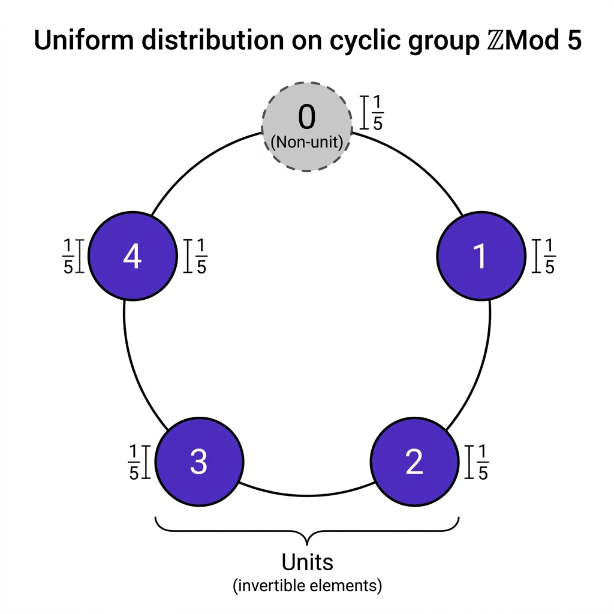

Uniform Distribution on ZMod p Units

Mathematical Exposition
The theorem establishes that under a uniform distribution on the cyclic group of integers modulo a prime $p$ (denoted as $\mathbb{Z}/p\mathbb{Z}$ or ZMod p), the probability (or measure) of selecting a unit (an invertible element) is exactly $\frac{p - 1}{p}$.
This result links basic probability theory with modular arithmetic and field theory. When $p$ is a prime number, the quotient ring $\mathbb{Z}/p\mathbb{Z}$ forms a finite field $\mathbb{F}_p$. By definition, a field is a commutative ring in which every non-zero element has a multiplicative inverse. Therefore, the set of units $U = (\mathbb{Z}/p\mathbb{Z})^\times$ is exactly the set of all non-zero elements:
$$ U = \{x \in \mathbb{Z}/p\mathbb{Z} \mid x \neq 0\} $$Since $\mathbb{Z}/p\mathbb{Z}$ has exactly $p$ elements ($0, 1, 2, \ldots, p-1$), the size of the unit set is:
$$ |U| = p - 1 $$For a uniform probability distribution, the probability mass function (PMF) assigns an equal probability weight of $\frac{1}{p}$ to every element. Because the events corresponding to each individual element are mutually disjoint, the total probability of selecting a unit is the sum of the individual probabilities of all units:
$$ P(U) = \sum_{x \in U} P(x) = \sum_{x \neq 0} \frac{1}{p} = (p - 1) \cdot \frac{1}{p} = \frac{p - 1}{p} $$Proof Methodology
The formal proof in Lean 4 utilizes the PMF.uniformOfFintype distribution from Mathlib. The proof proceeds as follows:
- Measure Unfolding: The application of
toOuterMeasureto the set of units is unfolded viaPMF.toOuterMeasure_apply, which expresses the measure of a set as an infinite sum (tsum) of indicators. - Sum Reduction: Since
ZMod pis a finite type (Fintype), the infinite sum is converted into a finite sum over the universal setunivusing the lemmatsum_eq_sum. - Algebraic Equivalence: The core algebraic step is proving that an element $x \in \mathbb{Z}/p\mathbb{Z}$ is a unit if and only if it is non-zero (
isUnit_iff_ne_zero), which holds because $p$ is prime. - Filtering and Counting: The set of units is rewritten as
Finset.filter (· ≠ 0) univ, which is equivalent to erasing $0$ from the universal set. The cardinality of this set is computed as the card of the universe minus one, yielding $p-1$. - Evaluation: Multiplying the card $p-1$ by the uniform weight $1/p$ yields the final result.
import Mathlib
open MeasureTheory ProbabilityTheory Set Topology Filter PMF ENNReal NNReal
Nat Function FiniteField Finset MeasureTheory.Measure
/-- The uniform distribution on `ZMod p` (for prime `p`) assigns measure `(p - 1) / p`
to the set of units. -/
theorem uniformOfFintype_toOuterMeasure_units (p : ℕ) [Fact p.Prime] :
(PMF.uniformOfFintype (ZMod p)).toOuterMeasure {x : ZMod p | IsUnit x} =
(p - 1 : ℕ) / p := by
classical
rw [PMF.toOuterMeasure_apply]
simp only [Set.indicator_apply, mem_setOf_eq, PMF.uniformOfFintype_apply, ZMod.card]
rw [tsum_eq_sum (fun _ h => (h (mem_univ _)).elim), ← Finset.sum_filter]
simp only [Finset.sum_const, nsmul_eq_mul]
congr 1
have : Finset.filter (fun x : ZMod p ↦ IsUnit x) univ = Finset.filter (· ≠ 0) univ := by
ext x; simp [isUnit_iff_ne_zero]
rw [this, Finset.filter_ne', Finset.card_erase_of_mem (Finset.mem_univ _),
Finset.card_univ, ZMod.card]